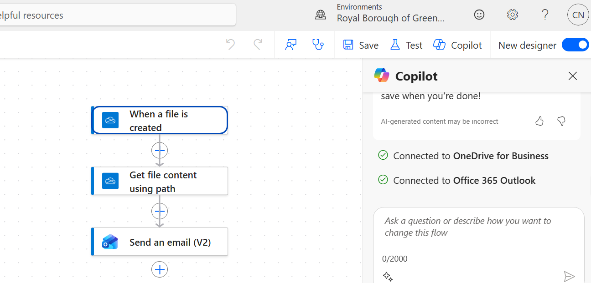

03 / My work
AI content design.
I design the instructions, standards and workflows that help AI systems produce useful content, handle uncertainty and support human judgement.
- Agent instructions
- Content workflows
- Evidence and oversight
Projects / 06
Selected case studies
- CASE STUDY / 01AI content design01
Form Design Compiler
Built and evolving · human review retainedA reusable YAML workflow makes form-building rules and known errors reviewable before import.
Claude · VS Code · Drupal Webform YAML - CASE STUDY / 02

AI content design02AI Content Design OS
Eight agents share one standard for a live form migration, with staff approval built in.
Claude Code · Python · Power Automate - CASE STUDY / 03AI content design03
Content Operations Agent
Median ticket time fell from 18 to 6 minutes across 12 historical tickets in prototype testing.
Claude Code · VS Code · Drupal - CASE STUDY / 04AI content design04
Data Analysis Agent
Analysis of 18,500 responses surfaced seven priorities for improving council website content.
Claude · Python · Data analysis - CASE STUDY / 05AI content design05
Agent Evaluation
A rubric, synthetic test set and evidence prove an AI agent is safe to trust before it touches resident data.
Claude · Evaluation · Python - CASE STUDY / 06AI content design06
Feedback Redactor
An in-browser tool strips personal data from resident feedback before analysis — then evaluation showed where its privacy promise rested on a guess.
HTML · JavaScript · Privacy by design
No projects match that search.
Try another word, or clear your search.